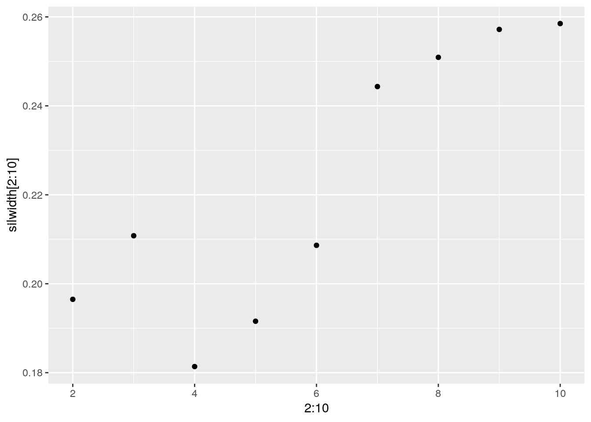

This is an R Markdown document. Markdown is a simple formatting syntax for authoring HTML, PDF, and MS Word documents. For more details on using R Markdown see http://rmarkdown.rstudio.com.
When you click the Knit button a document will be generated that includes both content as well as the output of any embedded R code chunks within the document. You can embed an R code chunk like this:
Note that the echo = FALSE parameter was added to the code chunk to prevent printing of the R code that generated the plot.
My first data set my phone screen screen time that I collected my Apple iphone which is a feature you can turn on and look at your data per day in the Settings app. It contains the amount of time I spent on apps with different categories. My second data set is my Netflix watching history, which I downloaded and added the episode or movie length that corresponded to each episode or movie and removed the titles. I wanted to explore how much time I really spent in front of a screen because I could feel myself spending more time when it was depressing, cold or rainy, outside and because of the continual stay at home orders. So, I expect the overall times to increase when it is either rainy or cold.
library(tidyverse)
library(dplyr)
library(ggplot2)
library(cluster)
Screen_Time_Data <- read.csv("Screen Time Data.csv")
NetflixTime <- read.csv("NetflixTime.csv")
newdat <- Screen_Time_Data %>% full_join(NetflixTime)
head(newdat)## Date High.Temp Rain..Y.N. Social Entertainment Shopping.and.Food Travel
## 1 2/7/21 68 N 93 49 15 0
## 2 2/8/21 59 N 107 15 6 0
## 3 2/9/21 60 N 160 6 23 0
## 4 2/10/21 61 N 86 36 0 0
## 5 2/11/21 59 N 252 0 0 0
## 6 2/12/21 62 Y 223 0 38 0
## Creativity Productivity.Finance Netflix
## 1 13 0 0
## 2 2 0 118
## 3 7 0 85
## 4 34 0 131
## 5 42 0 0
## 6 58 6 175I full joined the Netflix viewing data to the screen time data because both data sets had an entry for each date. No cases were dropped.
newdat <- newdat %>% mutate(tot_phone_time = Social + Entertainment +
Shopping.and.Food + Travel + Creativity + Productivity.Finance)
newdat <- newdat %>% mutate(totscreen = tot_phone_time + Netflix)A new variable that calculates the total time spent on my phone and the total time spent on a screen.
newdat <- newdat %>% mutate(Rain = Rain..Y.N.) %>% select(-3)
newdat <- newdat %>% mutate(Temp = High.Temp) %>% select(-2)Renaming the variables “High Temp” and “Rain (Y/N)”to “Temp” and “Rain” respectively, because it will be easier to work with.
tidydata <- newdat %>% pivot_longer(c("Social", "Entertainment",
"Shopping.and.Food", "Travel", "Creativity", "Productivity.Finance",
"Netflix"), names_to = "Consumption_Type", values_to = "Time") %>%
select(-2, -3)Tidied the data set by pivoting longer so that each activity on my phone and Netflix was now in a row under the label “Consumption_Type” and a new column that had the time spent on each activity.
tidydata %>% filter(Time == 0) %>% group_by(Consumption_Type) %>%
summarise(n = n()) %>% arrange(desc(n))## # A tibble: 6 x 2
## Consumption_Type n
## <chr> <int>
## 1 Travel 49
## 2 Productivity.Finance 36
## 3 Netflix 31
## 4 Creativity 24
## 5 Shopping.and.Food 24
## 6 Entertainment 16Travel apps had the most zeros indicating that they were were used the least.
tidydata %>% filter(Time > 0) %>% group_by(Consumption_Type) %>%
summarise(n = n()) %>% arrange(desc(n))## # A tibble: 7 x 2
## Consumption_Type n
## <chr> <int>
## 1 Social 50
## 2 Entertainment 34
## 3 Creativity 26
## 4 Shopping.and.Food 26
## 5 Netflix 19
## 6 Productivity.Finance 14
## 7 Travel 1Social apps were used the most, all 50 observations were nonzero.
summary(tidydata$Time)## Min. 1st Qu. Median Mean 3rd Qu. Max.
## 0.00 0.00 0.00 35.25 44.00 307.00summary(tidydata$Temp)## Min. 1st Qu. Median Mean 3rd Qu. Max.
## 55.00 60.00 62.00 63.46 66.00 84.00tidydata %>% mutate(day_condition = ifelse(Temp > 65 & Rain ==
"N", "good", "bad")) %>% group_by(day_condition) %>% summarize(mean(Time))## # A tibble: 1 x 2
## day_condition `mean(Time)`
## <chr> <dbl>
## 1 bad 35.3tidydata %>% group_by(Consumption_Type) %>% summarise(mean_time = mean(Time)) %>%
arrange(desc(mean_time))## # A tibble: 7 x 2
## Consumption_Type mean_time
## <chr> <dbl>
## 1 Social 152.
## 2 Netflix 43.5
## 3 Entertainment 23.1
## 4 Creativity 15.2
## 5 Shopping.and.Food 9.24
## 6 Productivity.Finance 3.2
## 7 Travel 0.46tidydata %>% filter(Time > median(Time)) %>% summarize(mean(Temp))## # A tibble: 1 x 1
## `mean(Temp)`
## <dbl>
## 1 63.5tidydata %>% filter(Time <= median(Time)) %>% summarize(mean(Temp))## # A tibble: 1 x 1
## `mean(Temp)`
## <dbl>
## 1 63.4tidydata %>% filter(Temp < median(Temp)) %>% summarize(mean(Time))## # A tibble: 1 x 1
## `mean(Time)`
## <dbl>
## 1 39.2tidydata %>% filter(Temp > median(Temp)) %>% summarize(mean(Time))## # A tibble: 1 x 1
## `mean(Time)`
## <dbl>
## 1 31.5tidydata %>% group_by(Rain, Consumption_Type) %>% summarize(mean_time = mean(Time,
na.rm = T), sd_time = sd(Time, na.rm = T), n = n(), se_time = sd_time/sqrt(n))## # A tibble: 14 x 6
## # Groups: Rain [2]
## Rain Consumption_Type mean_time sd_time n se_time
## <fct> <chr> <dbl> <dbl> <int> <dbl>
## 1 "N " Creativity 12.4 17.5 38 2.83
## 2 "N " Entertainment 23.3 23.1 38 3.74
## 3 "N " Netflix 35.6 67.4 38 10.9
## 4 "N " Productivity.Finance 3.61 7.12 38 1.15
## 5 "N " Shopping.and.Food 10.3 11.9 38 1.93
## 6 "N " Social 152. 53.2 38 8.63
## 7 "N " Travel 0.605 3.73 38 0.605
## 8 "Y " Creativity 24.2 22.4 12 6.47
## 9 "Y " Entertainment 22.4 20.4 12 5.88
## 10 "Y " Netflix 68.6 87.0 12 25.1
## 11 "Y " Productivity.Finance 1.92 4.01 12 1.16
## 12 "Y " Shopping.and.Food 6 11.4 12 3.29
## 13 "Y " Social 154. 60.8 12 17.5
## 14 "Y " Travel 0 0 12 0The minimum, first quartile, median, mean, third quartile, and maximum value for the time spent was 0, 0, 0, 35.25, 44, and 307 respectively. The minimum, first quartile, median, mean, third quartile, and maximum value for temperature was 55, 60, 62, 63.46, 66, and 84 respectively. On days that where the day condition was “bad,” below 65 degrees and/or rainy, the mean time spent in front of a screen was much larger than on the “good” condition days, above 65 degrees and non-rainy. The consumption type I spent the most time on, on average, was Social (152 mins) and the consumption I spent the least time on, on average, was Travel (0.5 mins). The average temperature when I spent more time in front of a screen than the median was the same as when I spent less time in front of a screen. However, when the temperature was above the median temperature, I spent more time in front of a screen than when the temperature was below the median temperature.
cormat <- newdat %>% select_if(is.numeric) %>% cor(use = "pair")
tidycor <- cormat %>% as.data.frame %>% rownames_to_column("var1") %>%
pivot_longer(-1, names_to = "var2", values_to = "correlation")
tidycor %>% ggplot(aes(var1, var2, fill = correlation)) + geom_tile() +
scale_fill_gradient2(low = "red", mid = "white", high = "blue") +
geom_text(aes(label = round(correlation, 2)), color = "black",
size = 2) + theme(axis.text.x = element_text(angle = 90,
hjust = 1)) + coord_fixed() + xlab("") + ylab("") + labs(title = "Correlation Between Variables")The Correlation heat map between variables shows that the highest positive correlation between the total time I spent on my phone and the amount of time I was on Social Media, indicating that the amount I was on social media attributed to the most time on my phone. Additionally, Netflix was highly positively correlated to my total screen time. The highest negative correlation was between the variables Social and Entertainment, which is expected because they would compete for my attention. For example, I would not be able to scroll on Instagram while simultaneously watching Youtube.
tidydata %>% mutate(day_condition = ifelse(Temp > 65 & Rain ==
"N", "good", "bad")) %>% ggplot(aes(Time, Temp)) + geom_point(stat = "summary",
fun = mean, aes(group = day_condition, color = day_condition)) +
labs(title = "Mean Consumption Time by Temperature", x = "Time (mins)",
y = "Degrees (Fº)") + facet_wrap(~Consumption_Type) +
scale_x_continuous(breaks = seq(0, 350, 50)) + theme(legend.position = "bottom")Based on the graphs, the consumption types that were most affected by the day condition were Netflix and Social. Time spent on each platform was much higher on days with “bad” conditions, under 65 degrees and/or rainy. This was expected, as much of the time when it is gloomy or cold I stay inside and tend to mindlessly scroll. Creativity, Travel, Shopping and Food, Productivity and Finance, and Entertainment seem to be similar on “good” and “bad” day conditions.
tidydata %>% ggplot(aes(Consumption_Type, Time, group = Temp)) +
geom_line(aes(color = Temp)) + geom_point(color = "white") +
labs(title = "Time Spent on Consumption Type by Temperature on non-Rainy and Rainy Days",
x = "Consumption Type", y = "Time Spent (mins)") + theme(axis.text.x = element_text(angle = 90,
hjust = 1), plot.title = element_text(size = 12)) + facet_wrap(~Rain) +
scale_color_gradient(low = "yellow", high = "red")Based on the graphs, consumption of Netflix varies the most between rainy and non-rainy days. Furthermore, on non-rainy days when the temperatures are upwards of 70º, consumption across all platforms dip. However, on rainy days time spent is mostly high across each consumption type. This could be due to the low temperature on rainy days. Creativity, Travel, Shopping and Food, Productivity and Finance, and Entertainment seem to stay consistent across temperature and rain conditions.
silwidth <- vector()
for (i in 2:10) {
contype <- newdat %>% select("Social", "Entertainment", "Shopping.and.Food",
"Travel", "Creativity", "Productivity.Finance", "Netflix") %>%
scale %>% pam(k = i)
silwidth[i] <- contype$silinfo$avg.width
}
ggplot() + geom_point(aes(x = 2:10, y = silwidth[2:10]))
pam1 <- newdat %>% select("Social", "Entertainment", "Shopping.and.Food",
"Travel", "Creativity", "Productivity.Finance", "Netflix") %>%
scale %>% pam(k = 3)
pam1## Medoids:
## ID Social Entertainment Shopping.and.Food Travel Creativity
## [1,] 38 -0.4231222 1.298383076 -0.1895756 -0.1414214 -0.7921555
## [2,] 50 -0.4598515 -1.037807926 0.5721121 -0.1414214 -0.7921555
## [3,] 36 0.2012769 -0.004492675 -0.7819994 -0.1414214 1.5499600
## Productivity.Finance Netflix
## [1,] -0.4913888 -0.5962769
## [2,] -0.4913888 -0.5962769
## [3,] -0.4913888 -0.1441368
## Clustering vector:
## [1] 1 2 2 3 3 3 3 3 1 1 1 1 3 3 2 3 2 1 2 1 2 2 3 2 2 3 1 1 1 3 1 3 2 3 2 3 3 1
## [39] 1 2 3 1 2 2 2 2 2 2 1 2
## Objective function:
## build swap
## 2.053163 1.970947
##
## Available components:
## [1] "medoids" "id.med" "clustering" "objective" "isolation"
## [6] "clusinfo" "silinfo" "diss" "call" "data"plot(pam1, which = 2)library(GGally)
newdat %>% mutate(cluster = as.factor(pam1$clustering)) %>% ggpairs(columns = c("Social",
"Entertainment", "Shopping.and.Food", "Travel", "Creativity",
"Productivity.Finance", "Netflix"), aes(color = cluster,
alpha = 0.5))The plot for silwidth shows that k should be equal to 10, however, I chose k = 3 as per Dr. Woodward’s recommendation. The ggpairs plot shows that when Social consumption is high, Entertainment consumption is low. However, the other variables are not as easily separated by cluster.
pamclust1 <- newdat %>% mutate(cluster = as.factor(pam1$clustering))
pamclust1 %>% ggplot(aes(Social, Entertainment, color = cluster)) +
geom_point()pamclust1 %>% group_by(cluster) %>% summarize_if(is.numeric,
mean, na.rm = T)## # A tibble: 3 x 11
## cluster Social Entertainment Shopping.and.Fo… Travel Creativity
## <fct> <dbl> <dbl> <dbl> <dbl> <dbl>
## 1 1 114. 48.3 7 1.53 3.8
## 2 2 163. 2.58 15.7 0 3.16
## 3 3 175. 23.8 3.62 0 40.2
## # … with 5 more variables: Productivity.Finance <dbl>, Netflix <dbl>,
## # tot_phone_time <dbl>, totscreen <dbl>, Temp <dbl>newdat %>% slice(pam1$id.med)## Date Social Entertainment Shopping.and.Food Travel Creativity
## 1 3/16/21 129 52 7 0 0
## 2 3/28/21 127 0 16 0 0
## 3 3/14/21 163 23 0 0 45
## Productivity.Finance Netflix tot_phone_time totscreen Rain Temp
## 1 0 0 188 188 N 58
## 2 0 0 143 143 N 70
## 3 0 33 231 264 N 60Cluster 1 and Cluster 3 are not easily separable by Entertainment and Social. However, the Cluster 2 is separable from Cluster 1 and Cluster 3. Cluster 1 is characterized by low Social and high Entertainment and is composed of low temperature, around 58 degrees, and non-rainy days. Cluster 3 is characterized by mid-to-high Entertainment and mid-to-high Social and is composed of high temperatures, around 70 degrees, and non-rainy days. Cluster 2 is characterized by low Entertainment and varies on Social with mid-to-low temperatures, around 60 degrees, and non-rainy days. With an average silhouette width of 0.21, it is evident that the observations are not clustering well with a k value of 3 and no substantial structure has been found.